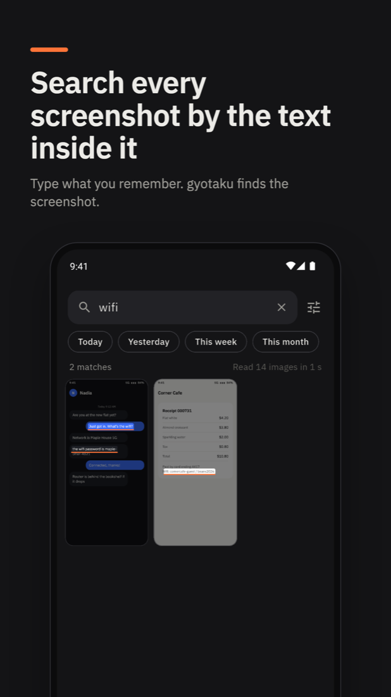
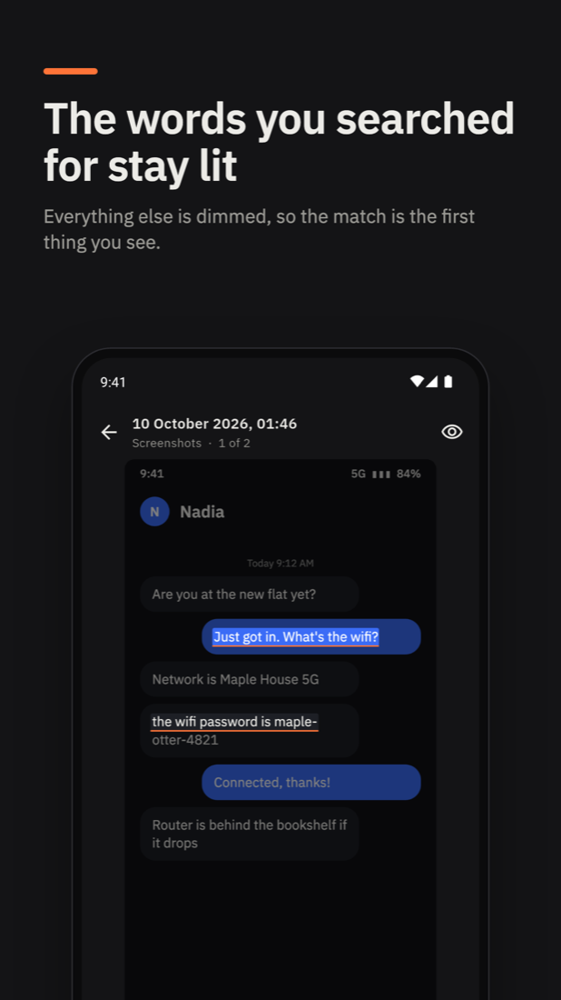
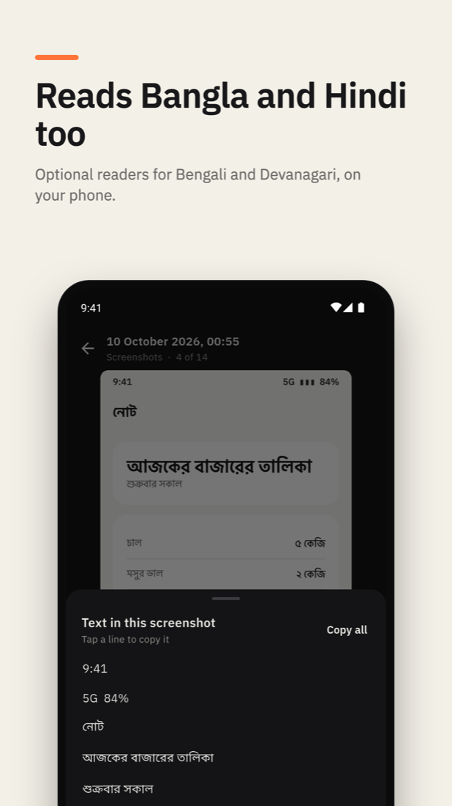
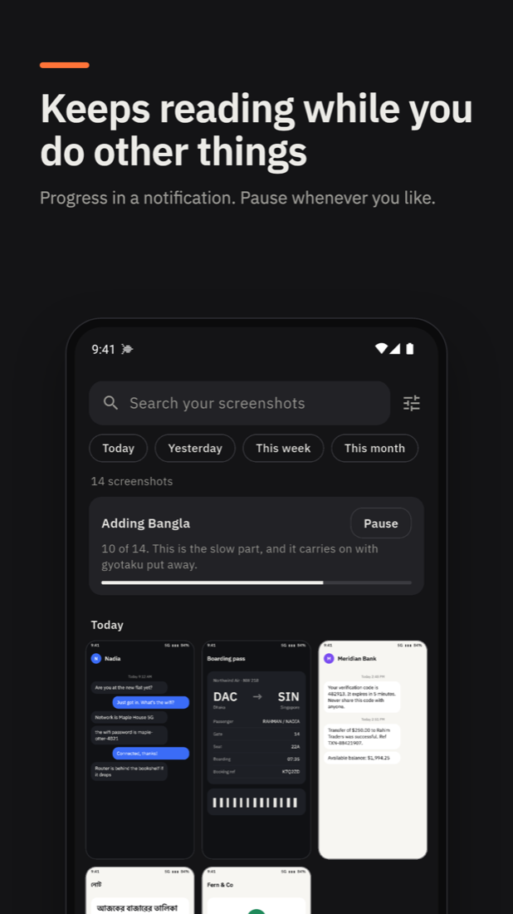

Find any screenshot by the text inside it
gyotaku reads the screenshots on your Android phone and makes them searchable. Everything is read on the phone. Nothing is uploaded.
Free and open source. Android 7.0 or later. No account, no ads, no analytics.
- Order 48213
- Out for delivery today
- 2 items, paid by card
- Delivery address: 14 Lake Road
- Thank you for shopping with us




What it does
- Searches by the text in a screenshot, not its file name or date.
- Copies text out: one line, or all of it.
- Filters by Today, Yesterday, This week and This month.
- Reads only the folders you choose.
Private by design
- Your screenshots are read on your phone and never uploaded.
- The only network use is downloading a reader you turn on.
- It only reads your images. It never changes, moves or deletes them.
Bangla and Hindi
Turn on Read Bengali or Read Devanagari in settings to also read Bangla, Hindi, Marathi and Nepali. These readers download once and are slower: a few seconds for each screenshot. Reading carries on with the app put away, and can be paused.
This is an unofficial community app. It is built on gyotaku, the desktop app by Yash Bavadiya, and uses that project's own index, search and readers. It is maintained separately by Zaman Sheikh. Please report problems with the Android app in this app's issues, not to the desktop project.